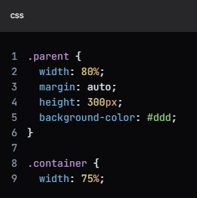

UNIDADES DE MEDIDA
UNIDADES DE MEDIDA UTILIZADAS...
En el código CSS, las unidades de medida utilizadas son las siguientes:
"font-size: 1.6rem;"
La unidad de medida utilizada aquí es rem. Esta unidad se basa en el tamaño de fuente del elemento raíz (normalmente el elemento html).
El REM viene como sucesor del EM y ambos comparten la misma lógica operativa (font-size), pero la forma de implementación es diferente.
Mientras que el em está directamente relacionado con el tamaño de fuente del elemento padre, el rem está relacionado con el tamaño de fuente del
elemento root (raíz), en este caso, la tag.
"font-size: 2.0rem;"
De nuevo, la unidad de medida utilizada es rem.
El hecho de que el rem se relaciona con el elemento raíz soluciona ese problema que teníamos con varias
divs (elementos) anidados, ya que no habrá esta "herencia" de tamaños. Por ejemplo, sabemos que la tag html es la tag raíz de todo documento html.
Dicho esto, si definimos que el font-size de este elemento será de 18 px, por lo que 1rem = 18px, 2rem = 36px y así sucesivamente... Por lo general,
los navegadores especifican el tamaño de fuente predeterminado para el elemento root (raíz), 16px, ¡así que guárdelo en su corazón! Aun siendo esta
unidad más tranquila para trabajar, no se usaba mucho para el diseño responsivo.
"font-size: 2.0em;"
Esta unidad relativa es muy famosa en el mundo CSS. Difícilmente encontrarás algún navegador que no admita esta medida,
que ha estado presente desde el principio. Este es definitivamente uno de los puntos que hacen que el em sea muy popular. El segundo punto es
sin duda, la facilidad para crear layouts fluidos y responsivos. Esta unidad cambia a los elementos hijos de acuerdo con el tamaño de
fuente (font-size) del elemento padre.
"padding: 10px 0px 10px 0px;"
La unidad de medida utilizada aquí es px, que representa píxeles. Esta unidad se utiliza para especificar el espacio de
relleno alrededor del contenido de un elemento.
Píxel no es más que los pequeños puntitos luminosos en la pantalla de tu monitor, móvil, televisión, etc. ... Por lo tanto, ¡el píxel es el elemento
más pequeño en un dispositivo de exhibición!. Esta es una medida muy famosa para los diseñadores web, la mayoría de los desarrolladores web utilizan
el píxel como la unidad principal de sus proyectos. Un detalle que pocos conocen es que, de hecho, el píxel del CSS NO es realmente un píxel de la
pantalla del dispositivo (hardware), pero lo que llamamos píxel de referencia que suele ser más grande que el píxel real. Lo que termina convirtiéndolo
en una medida abstracta donde es necesario controlar el mapeo de este píxel de referencia al píxel de hardware (¡sucede detrás de las cortinas!). Un punto
nteresante para comentar es que, recientemente el boostrap 4 dejó de usar PX y migró a REM.
En resumen, las unidades de medida utilizadas en el código CSS son em y rem para el tamaño de fuente, y px para el relleno.
¿CUALES SON LAS MEJORES UNIDADES DE MEDIDA PARA LA FUENTE?
Cuando se trata de configurar tamaños de fuente en CSS, la mejor unidad de medida a utilizar suele ser remo em. Estas unidades son
relativas al tamaño de fuente del elemento raíz ( html), lo que facilita la creación de tipografía escalable y consistente en todo el proyecto.
Sin embargo, si desea minimizar el impacto en cascada de los tamaños de fuente en unidades relativas, se recomienda aplicar font-sizelos elementos
secundarios más bajos posibles.
A continuación se muestra un ejemplo de uso remde tamaños de fuente:
HTML:
CSS:

En este ejemplo, el "font-size" valor del "html" elemento se establece en 16px. La clase "component" tienen "font-size" con valores relativos a la
clase "component". El uso de "rem" o "em" para tamaños de fuente garantiza que su tipografía se adapte bien a diferentes tamaños de pantalla y brinde
una experiencia de usuario consistente
¿CUALES SON LAS MEJORES UNIDADES DE MEDIDA PARA LOS CONTENEDORES?
Cuando se trata de dimensionar contenedores, los porcentajes suelen ser la mejor unidad de medida. Le permiten ajustar el
tamaño de un elemento en relación con su contenedor principal, lo que facilita la creación de diseños receptivos. Ejemplo:
HTML:
CSS:
